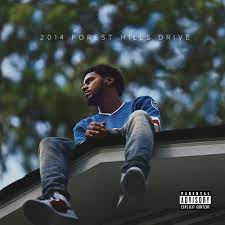

J Cole
Pros
- His flow is fantastic
- Deep and meaningful lyrics about a variety of topics
- He has a large discography with a plethora of good songs to listen to
Cons
- He does not have the best voice, but his voice is not a weakness
- He does not consistently drop music as often as one would hope
Best Album - 2014 Forest Hills Drive
Best Songs
- Lights Please
- Lost Ones
- Love Yourz
